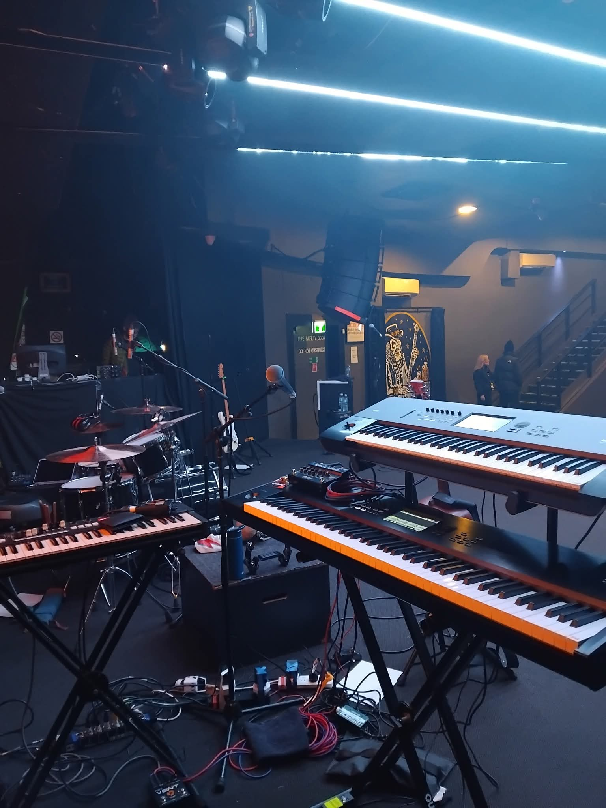

Rig & The Road
Gear, Endorsements & Life on Tour
Gear, Endorsements & Life on Tour
For Danny Mattin the Hammond organ sits at the centre of everything. It is the instrument that defines his sound and the heartbeat of his stage setup.
While many modern keyboard players rely almost entirely on digital instruments, Danny keeps one studded boot planted in the classic tradition. The Hammond organ works together with a rotating Leslie speaker — that iconic cabinet on stage that gives the Hammond its swirling movement and depth. The Leslie is not simply an accessory. It becomes another voice in the band, shifting from warm blues textures to the full roar of classic rock.
Alongside the Hammond, Danny uses a range of professional stage keyboards to extend his sonic range. His setups have included instruments from Korg and Kurzweil, allowing him to move easily between vintage organ tones, piano parts and layered synthesiser textures during live performance.
Signal quality and tone shaping are equally important parts of the rig. Danny uses equipment from Radial, a respected name in professional audio routing and stage electronics.

One of the key pieces in Danny's signal chain comes from Lounsberry Pedals, specialists in handcrafted preamps designed to enhance the character and drive of the Hammond organ. These units allow the instrument to cut through a full rock band while retaining warmth and clarity.
For Danny the philosophy is straightforward. Technology should serve the music. The equipment may evolve, but the goal remains the same — deliver the richest possible keyboard sound on stage and let the Hammond speak for itself.
Danny on Lounsberry Pedals Watch Endorsement Video
The camaraderie, the late nights, the breakdowns, the laughs — life on tour is where the real stories come from. Between the venues, the motorways and the green rooms, these are the moments that make it all worthwhile.
Fast-cycling postcard-style images from life on tour
Danny's stage presence extends beyond his Hammond organ sound. His performance style is matched by a distinctive visual identity that draws on classic rock, glam influences and vintage fashion.
His stage wardrobe is an eclectic mix sourced from vintage clothing stores and specialist designers — PHIX Clothing, Sai Sai and Cyberdog in Camden Town, along with many vintage pieces.
Danny is also an admirer of the renowned London tailor Sir Tom Baker, whose work for musicians and performers has become legendary. Vintage and custom waistcoats are a particular favourite, often forming the centrepiece of his stage gear look.
For Danny the stage is essentially about music — but giving a paying audience a 360-degree professional show means paying attention to atmosphere and personality. The combination of rock-metal driven sound and striking visual style makes for a memorable performance.